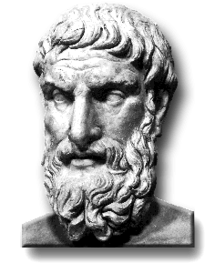

|
 |
||
 |
 Welcome! Epicurus of Sámos (341-270 BCE), the Greek “garden philosopher,” was an ancient sage who left us an enduring message of optimism. His philosophy conveyed the ultimate conviction that individuals can live in serene happiness, fortified by the continual experience of modest pleasures. This website serves as an informational resource documenting the legacy of Epicureanism with electronic texts, photography, book lists, links to related sites, and: The Epicurus Wiki. |
 |  |
|
Food for
thought... “Laughter is the closest distance between two people.” - Victor Borge |
|||